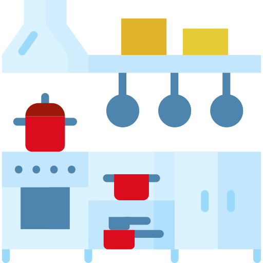

Saving water in the Kitchen
Kitchens consume over a fifth (22%) of a household's water.

Laundry
- Surveys show that a typical load of washing is usually much less than the maximum capacity of the model, so stuff in a few extra shirts to make the most of your loads!
- When buying a washing machine, check the label or specifications for water use, the best models will typically use less than 7.5 litres per kg.
- Read the manual to find out which cycles are the most water-efficient.

Doing the Dishes
- Try to buy a dishwasher with a capacity suitable for your household size, so that it’s always full.
- Use the Eco-Setting on your Dishwasher.
- Avoid pre-rinsing dishes, detergents are highly effective, so all you need to do is simply scrape and place. Easy.
- Try adding a washing up bowl or plug into your sink to catch excess. This can reduce water wastage by 50%.

Cooking
- Using the lid on saucepans reduces the amount of water lost through evaporation. It also helps your lovely veg cook quicker.
- Steam vegetables rather than boiling them, it’s healthier and saves water.
- When boiling pasta or rice, only fill the pot so that the water is just above the contents in the pot.
- Try to fill the kettle with only what is needed, this will save water and energy.